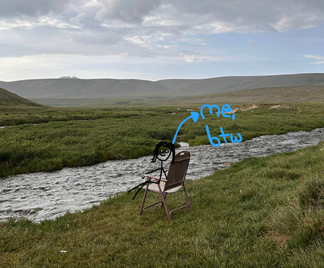

full-stack software engineer.
i'm a cs senior at fast, nuces, lahore, 3.78 cgpa (not that it matters anymore). before that i did my a-levels in 2023 and got 4 A*s, including 3rd position in punjab for best across 3 a-level subjects (probably the last time i was happy before cs took the light out of my eyes). in o-levels i got a distinction too, best in biology in pakistan.
somewhere in between i also ta'd a database course at fast for 50+ students, grading quizzes and trying to make normalization sound less like a punishment. mostly it worked.
experience.
lately i've been on a hackathon kick. for an openai hackathon i built or-bit, a multi-tenant workflow builder where teams compose trigger/action node graphs, run them as durable jobs, and watch a stagehand-driven browser execute live. demo here.
then deflake, an agentic service that samples a failing pytest, digs up the root cause with graph-based tool use, proposes a fix, sandbox-verifies it, and opens the pr itself. built on langgraph, fastapi, and pgvector, because apparently i trust an agent to fix code more than i trust myself at 3am.
also built a rate-limited developer saas platform: a metered api gateway with dual auth (jwt plus hashed api keys), per-plan rate limiting through atomic redis lua scripts, async request logging on a bullmq worker, a live websocket feed, and a graphql analytics endpoint, all sitting in docker compose.
and resuflow, an end-to-end pipeline that turns a messy cv into a deployed portfolio site. gemini api pulls structured json out of free-form text, vercel's api handles the one-click deploy, and it spits out a scannable qr code at the end. demo here.
jack of all trades is a master of none - but often times better than a master of one so also made more stuff, diversifying my stack. built a rag-based reading assistant for academic pdfs with hybrid dense and sparse retrieval and auto-generated cross-paper knowledge graphs, shipped a solo android housing app in java with firebase auth and gemini-powered search, put together a mood-based music recommender with a 3-person team that auto-adds spotify songs to your playlist depending on how you're feeling, and before any of that, wrote a working sudoku game in x86 8088 assembly because apparently manipulating video memory by hand builds character.
some of it worked.
most of it taught me something anyway.
also, over the summer of '26 i picked up a new hobby: making portfolios. people hoard shoes or vinyl records, i hoard portfolio sites (this one's a blog style portfolio - just in case you were curious). professional, minimalistic, artsy, and 3d.
disclaimer - not all of them are updated
the stack, roughly: python, typescript, javascript, java, c++, and sql on the language side, postgres, mongodb, redis, firebase, and supabase for data, react, next.js, node, express, fastify, and spring boot for building, docker and vercel for shipping it, plus the usual git, postman, graphql, and websockets underneath.
